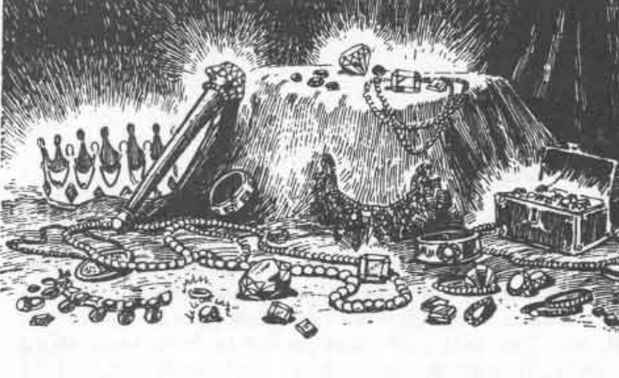

护符 · Amulets
凯恩山护符
这枚护符最初是为了保护平民免受萦绕这些山丘的灵魂侵扰而创造的，如今已成为盗墓者中的珍品。它允许佩戴者针对亡灵的任何特殊攻击（包括衰老、能量吸取、恐惧、疾病、力量吸取等）进行法术豁免检定。亡灵进行的物理攻击和施放的法术不受护符影响。成功对亡灵攻击进行豁免会消耗 1 次充能，以下情况例外：两级能量吸取消耗两次充能，而衰老每造成 10 年衰老消耗 1 次充能。护符有 2–20 次充能，不能重新充能。
XP 价值：2,000 XP。GP 价值：18,000 GP。
弗留伦迪护符
这些护符中的第一枚被附魔来保护弗留伦迪的善良原住民，尽管后来它们也被许多土地和阵营的角色使用。护符挂在银链上，会对任何受到诅咒的佩戴者施放移除诅咒。护符会发光，消耗一次充能；任何受到法术影响的诅咒都会被解除。例如，它可以立即让人物摆脱阵营改变头盔之类的受诅咒物品，但不会治愈狼人化。护符有 2–7 次充能，不能重新充能。
XP 价值：1,400 XP。GP 价值：7,000 GP。
斯派恩城堡护符

埃尔迪王国的法师创造这枚护符，以帮助对抗北方蛮族的战争。斯派恩城堡陷落后，护符消失了。学者认为它没能在蛮族的愤怒中幸存，但关于护符在骨沼边区使用的故事仍然流传。
每小时一次，可以命令这枚金色护符在半径 30 英尺内释放魔法灵光，持续一轮。灵光会对所有北方蛮族产生负面效果，提高他们的迷信恐惧，并产生对魔法的憎恨。1 至 4 级者必须通过对法术的豁免检定，否则会立即退出作用范围，持续 1d8 轮。5 至 7 级者必须通过对法术的豁免，否则会被震慑一轮。更高等级者的“命中”骰受到 −1 处罚。
XP 价值：900 XP。GP 价值：4,500 GP。
上一节：权杖、法杖与魔杖 · Rods, Staves, and Wands
下一节：奥斯地理 · Geography of Oerth